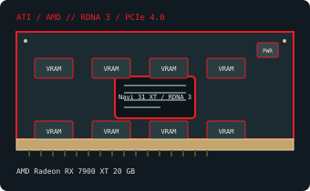

[ MODERN PCI EXPRESS GRAPHICS // IDENTIFIED COMPONENT ]
AMD Radeon RX 7900 XT 20 GB
Navi 31 XT / RDNA 3, 2022. This record identifies the listed retail model/configuration; board-partner variations are called out separately.

MODEL / VARIANT: Radeon RX 7900 XT 20 GB, distinct from RX 7900 GRE (16 GB) and RX 7900 XTX (24 GB). Reference and custom partner board characteristics are not interchangeable.
Recorded specifications
| Cataloged product | AMD Radeon RX 7900 XT 20 GB |
|---|---|
| GPU / architecture / launch | Navi 31 XT / RDNA 3; 2022. |
| Core & memory | 84 compute units and 5,376 stream processors; 20 GB GDDR6 on a 320-bit bus with 80 MB Infinity Cache; up to 2,400 MHz boost clock. |
| Host interface & power | PCI Express 4.0 x16; AMD specifies 315 W typical board power and two 8-pin PCIe power connectors for the reference design. 315 W typical board power; plan PSU capacity and thermal clearance using the exact manufacturer’s guidance. Partner cards can increase board power and dimensions. |
| Typical reference outputs | Reference outputs include DisplayPort 2.1, HDMI 2.1 and USB-C; add-in-board port count and layout may differ. |
| Board dimensions | AMD reference board approx. 276 × 110 × 51 mm (L × H × T); partner designs vary. Verify the exact board drawing before installation. |
| Variant boundary | Radeon RX 7900 XT 20 GB, distinct from RX 7900 GRE (16 GB) and RX 7900 XTX (24 GB). Reference and custom partner board characteristics are not interchangeable. |
Compatibility, service & archival notes
Requires an x16-length PCIe slot with adequate clearance and two 8-pin leads for the reference card. Check chassis length/thickness, PSU quality, UEFI and a supported driver. Outputs and dimensions on non-reference models must be checked against their own model numbers.
- Check the exact slot keying/signaling, board dimensions, auxiliary-power pinout, PSU guidance, airflow and display outputs for the specimen; connector appearance alone does not establish compatibility.
- Install a driver supporting the recorded device ID and target OS. Preserve the original driver and firmware versions before making changes.
- Record board partner, PCB and cooler revision, device/subsystem IDs, BIOS, adapter set and physical condition. Do not power a card with damage, corrosion, obstructed cooling or suspected shorts.
Manufacturer, model & standards sources
- AMD Radeon RX 7900 XT 20 GB specifications — TechPowerUp GPU DatabaseIndependent model-level GPU and memory reference; exact add-in-board properties can differ.
- AMD Radeon RX 7900 XT product specificationsAMD reference model specifications; partner card output, dimensions and power can differ.
- PCI-SIG PCI Express specificationsHost-link standard reference; physical fit does not alone guarantee power, firmware or driver compatibility.
- AMD product support and driver selectionAMD manufacturer support reference for identifying a compatible driver branch and operating system; availability depends on product age.
- Hardware Unboxed — AMD Radeon RX 7900 XT Review & BenchmarksIndependent video review; treat as supplementary context, not primary manufacturer documentation.
GPU-family references do not supersede the card manufacturer’s manual, nameplate or board revision for a specific specimen.